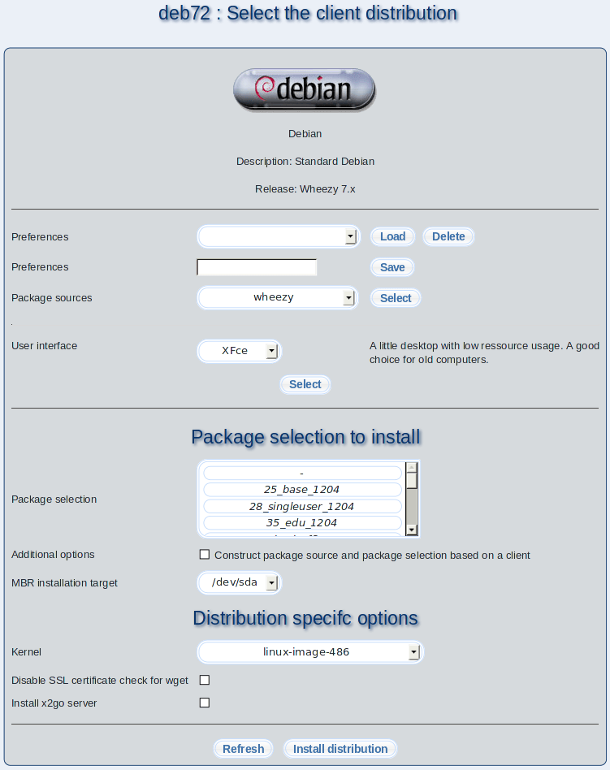

A distribution is a composition of different software packages stored on CDs, DVDs or in the internet. Some of these distributions are free software and available for free download. E.g. Debian is a free Linux distribution. Distributions differentiate in the installation program and the eye candy of the desktop only. There are no significant differences. The selection of a certain distribution is mostly a matter of taste. This dialog makes it possible to install different distributions with m23.
- Loading preferences: Select a previously saved preference from the list and click on ''Load''.
- Deleting preferences: By clicking on the ''Delete'' button you can remove the selected preference.
- Saving preferences: You can save the current values as a preference by entering a name and clicking on the ''Save'' button.
- Package sources: You have to choose the package source first that can be found, created or modified under Packages
Package sources. Choosing a package selection predefines the Linux distribution and the distribution's release and the installable user interfaces. Click on ''Select'' to choose the package source. The logo and a short descriptive text for the choosen distribution will be shown.
- User interface: Depending on the selected distribution, you have the choice between different graphical user interfaces (GUIs). If you want to install a server without a graphical desktop you can select ''Textmode'' .
- Package selection: You can choose a package selection that will be installed together with the operating system.
- MBR installation target: m23 tries to detect the first harddisk drive for installing the bootmanager automatically. If you want to choose a different disk, you can do it here. Please keep in mind that you have to choose the drive that is the first in the BIOS booting order.
- Distribution specifc options: Every distribution can define a variety of options which are used during the distribution installation.
To start the installation simply click on ''Install distribution''.
root
2015-04-30